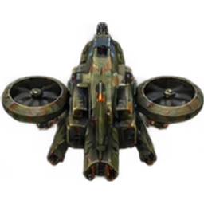
Bastion Gunship
Aircraft · Cost 1600 · HP 22,000 · Speed 145
Base damage 3,600; reload 40 ticks. Armor and faction modifiers apply.
Development content for all twenty subfactions: aircraft, beasts and parent-faction superweapons, alongside existing buildings and defenses. Published alpha.2 downloads are unchanged.
Superweapon icons automatically charge in the Defences tab while their installation exists. Losing the last installation removes its power; rebuilding starts a fresh charge. Low power pauses charging.
Destroy or depower an installation during its warning to cancel the strike. Once salt judgement lands, destroying its source cannot rescue the statues. Terrain tiles and resources are not transformed.
Shared by all four subfactions. Existing faction buildings and defensive structures remain available.

Aircraft · Cost 1600 · HP 22,000 · Speed 145
Base damage 3,600; reload 40 ticks. Armor and faction modifiers apply.
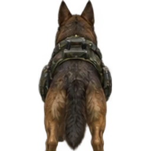
Beast · Cost 250 · HP 7,500 · Speed 140
Base damage 1,800; reload 20 ticks. Armor and faction modifiers apply.
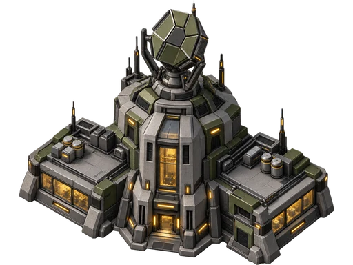
Nuclear missile: five-second warning, six-cell blast, damages allies and enemies.
Cost 6000 · 250 power · five-minute recharge · one per player.
The human installation currently uses existing tech-building artwork.
Shared by all four subfactions. Existing faction buildings and defensive structures remain available.
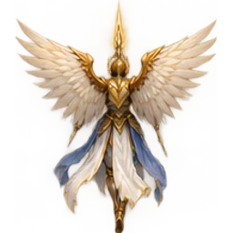
Aircraft · Cost 1900 · HP 30,000 · Speed 115
Base damage 6,500; reload 70 ticks. Armor and faction modifiers apply.
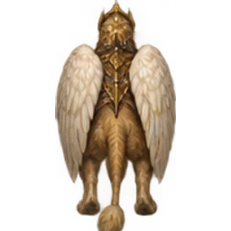
Beast · Cost 650 · HP 24,000 · Speed 95
Base damage 4,800; reload 45 ticks. Armor and faction modifiers apply.
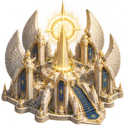
Witness of Salt: the angel unfolds three pairs of wings, flashes after five seconds, petrifies everything destructible within four cells, then the statues crumble four seconds later. Friendly fire applies.
Cost 6000 · 250 power · five-minute recharge · one per player.
Shared by all four subfactions. Existing faction buildings and defensive structures remain available.
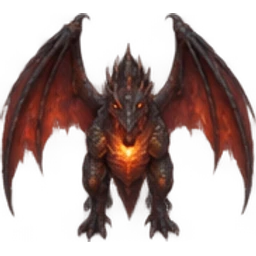
Aircraft · Cost 1400 · HP 24,000 · Speed 135
Base damage 4,200; reload 48 ticks. Armor and faction modifiers apply.
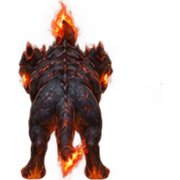
Beast · Cost 400 · HP 13,000 · Speed 125
Base damage 3,000; reload 28 ticks. Armor and faction modifiers apply.
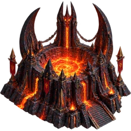
Hellrift: five-cell blast that burns enemy armies and structures.
Cost 6000 · 250 power · five-minute recharge · one per player.
Shared by all four subfactions. Existing faction buildings and defensive structures remain available.
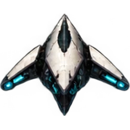
Aircraft · Cost 1700 · HP 18,000 · Speed 190
Base damage 3,000; reload 25 ticks. Armor and faction modifiers apply.
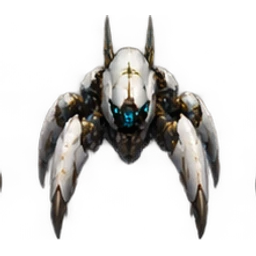
Beast · Cost 550 · HP 16,000 · Speed 135
Base damage 2,500; reload 25 ticks. Armor and faction modifiers apply.
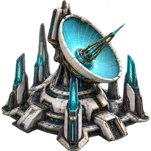
Extinction: three orbital pulses in five cells with combat-system disruption.
Cost 6000 · 250 power · five-minute recharge · one per player.
Shared by all four subfactions. Existing faction buildings and defensive structures remain available.
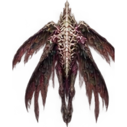
Aircraft · Cost 1800 · HP 28,000 · Speed 125
Base damage 5,800; reload 65 ticks. Armor and faction modifiers apply.
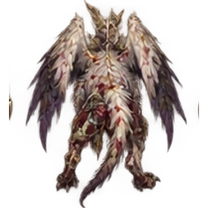
Beast · Cost 750 · HP 30,000 · Speed 85
Base damage 6,000; reload 50 ticks. Armor and faction modifiers apply.
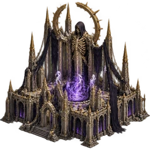
Sepulchral Rapture: five-cell soul blast and thirty seconds of miracle suppression.
Cost 6000 · 250 power · five-minute recharge · one per player.
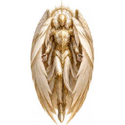
Three wing pairs unfold before the flash. Petrified actors stop moving, lose weapon damage and become salt-white. Buildings lose power and production pauses before the four-second crumble.